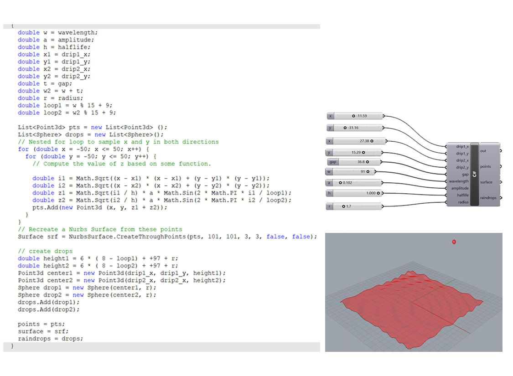
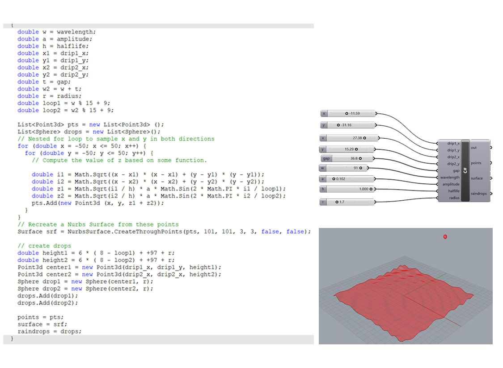

TRANSIENT, INTRANSIENT
Group Project
Fall 2021
Team member: Esther Xie, Angela Zhu, Gerardo Corona
GSD 6338 Introduction to Computational Design
Instructor: Jose Luis García del Castillo y López
Role in Team: concept development (70%), programming (80%), representation (30%)
This project draws inspiration from the permutable qualities of natural landscapes. Water, time and light come into play in this aspiration to emulate the complexity found in nature.
The space is defined by a plane in flux, where the effect of two different points creates concentric ripples. A kinetic plane, the effect reads as waves in motion. On a vertical plane, drops intersect the undulating surface at different heights, creating the effect of falling droplets. The tension in the waves breaks when the droplets reach an intersection with the horizontal surface. As the final animation unveils, it becomes apparent that transience and permanence can be best understood in when objects are in motion.
See project video .
 

Kinetic surface is created using grasshopper and C#.